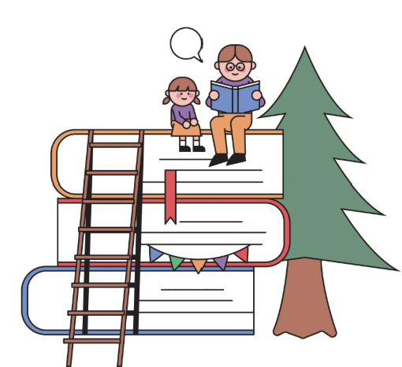

우리동네 독서 대시보드
우리 동네 도서관 데이터로, 우리 동네에 꼭 맞는 문화프로그램을 기획해보세요.

지역과 도서관을 선택하면, 독서 성향 분석이 시작됩니다.
강점 주제, 이달의 키워드, 유사지역 사례를 모두 선택해주세요.
먼저 원하는 테마를 선택하면, 유사 지역의 강좌 중 해당 테마에서 경쟁률이 높은 사례를 보여줍니다.
* 지역별 추가 키워드 추천은 우측 하단의 채팅창을 사용해주세요.
선택한 주제와 참고 자료를 바탕으로 GPT가 맞춤형 기획안을 제안합니다.
* 기획안 수정을 원하시는 분은 우측 하단의 채팅창을 사용해주세요.